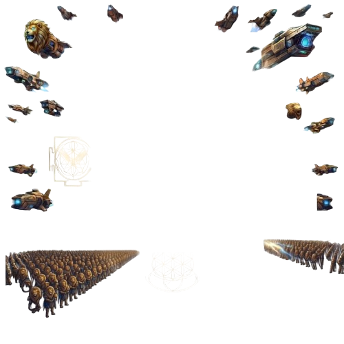
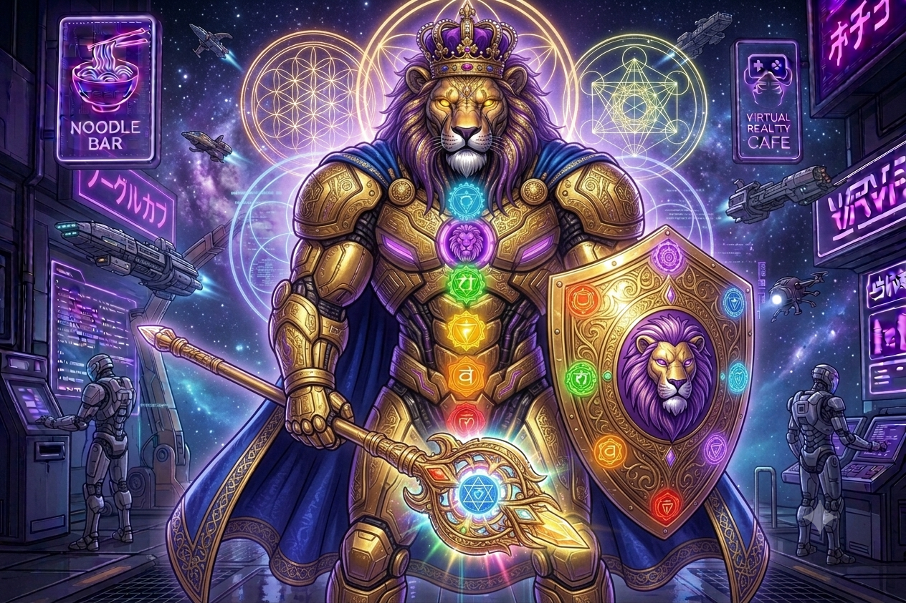

Bienvenido, Operador.


Bienvenido, Operador.


Desconexión total: sin música, sin distracciones, sin notificaciones.
Inhala 4 segundos, sostén 7, exhala 8. Repite 4 veces para calmar la mente.
Escribe 3 cargas que te pesan hoy y suéltalas conscientemente, entregándoselas a Dios.
Enumera 3 cosas por las que agradeces hoy. La gratitud fortalece tu inteligencia emocional.
Este pilar está en construcción. Pronto vas a poder registrar tu progreso de aprendizaje aquí.
Fundamentos de IA, modelos de lenguaje y automatización aplicada a negocios reales.
Vocabulario y comunicación técnica en inglés para el mundo laboral tecnológico.
Inversión, análisis financiero y estrategias avanzadas más allá del control básico de gastos.
Protección de datos, redes y sistemas — fundamentos de seguridad digital aplicada.
Lógica de programación y desarrollo de software desde cero, paso a paso.
Infraestructura en la nube y automatización de procesos para escalar cualquier negocio.
Estructura de boleta japonesa (給与明細書) — registra tus horas e ingresos para calcular tu sueldo neto real.
—
—
—